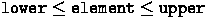

The SimpleTree class (See Figure 4.1) is a simple implementation of non-balanced tree structure. The class is a template class and is able to contain any object that implements a few comparison operations.
The SortableFixedString class (See Figure 4.2) is an example of such object. The class represents a fixed-size array of chars. The objects of the class are compared by the string which the array constitutes.
The extra top object is necessary for the implementation, but it is for simplicity of the implementation. The extra This parameters in some operations would be omittable if the implementation were more refined. The implementation of these classes appear in the Appendix A.6.
The operator insert() inserts the specified value into the tree. If the insertions are pre-ordered, the tree becomes non-balanced and the searching performance degrades.
The operator search() picks up the object with the specified value and returns the PersistentPointer object to it. If the searching fails, the operator returns a null pointer.
The operator match(lower, upper) return the tree whose elements satisfy the condition .The tree is generated by the operation and must be destroyed if it becomes unnecessary. The private operator doMatch() actually constructs the matched tree.
The operator traverse(os) recursively traverses the whole tree and prints out the elements in the ascending order to the specified ostream os.
One of the most significant characteristics of the class is that only a small part of the tree structure is mapped in the main memory. The Figure 4.3 shows the grabbing state of the tree during operations.
For any graph structure in the persistent storage, the schemes for reference and manipulation can be implemented in this way. There are practically no limitations in the total object size thanks to this feature.